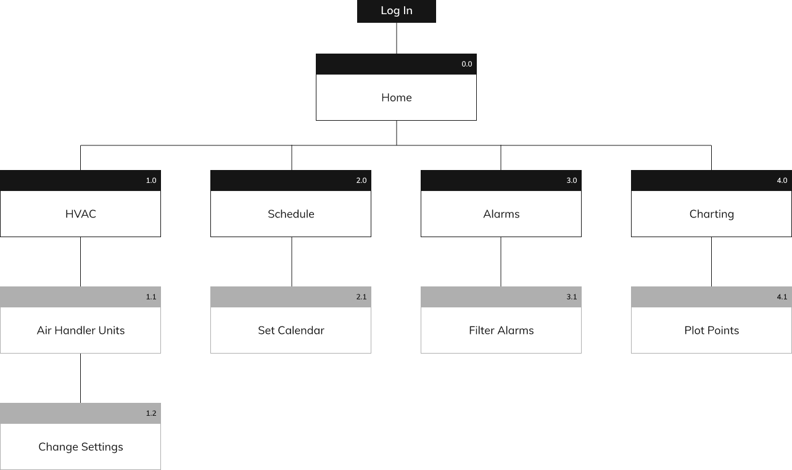
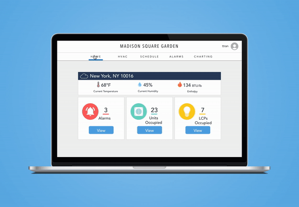
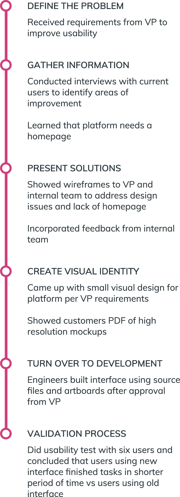
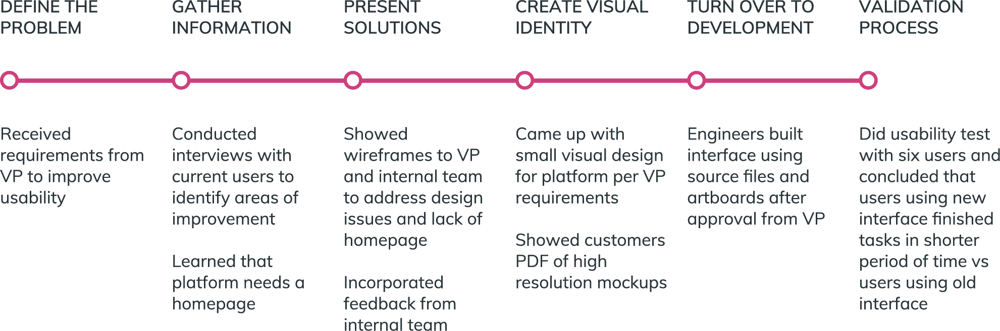

Office Space IoT Web App
Visual Design | UX Design | Desktop
About Controlco
Controlco integrates systems for centralized building automation controls. They are a B2B company specializing in IoT products that lets users see trending data and operate their facilities. These products are in-browser applications where users can log in to access their building's innerworkings. Controlco serves corporations that own malls, high-rises, and data centers.
Project Overview
One of our customers is a provider of shared workspaces for small businesses and large enterprises. They contracted us to centralize several of their buildings' controls including HVAC, lighting, and other systems. While we already had an interface in place for them, I was charged with the task to come up with a new design for the product to improve usability and promote a better look.

Out With the Old
Before my onboarding with Controlco, there weren't any other designers. There were no established processes, no workflow, and no design-first attitudes. Many of the designs were cranked out by the CEO and engineers themselves. Here are some screenshots of the interface before I headed up the new design initiatives.

The current HVAC and homepage are identical and no one questioned why

The inconsistent fonts shown in the alarm console

Poor use of the modal best practices
As I do with other redesigns, I went through the current website and noted things I can improve on. I made sure that my solutions would align with our goals during the entire process.
- The HVAC page was the exact same thing as the homepage
- There was no consistency in font and color
- There were a few counterintuitive features like the dropdowns that contained only 2 selections
- No flow of information or hierarchy
Site Maps and Mockups
The users of our products are mainly technicians and field engineers who've worked in the industry for decades. They love their data, numbers and large font, and were not very open to new designs. In order for Controlco to thrive and gain more contracts, we needed to update our products and make sure they look just as good as they perform.
The layout for the in-browser apps are almost the same for all customers. Each website has a global navigation bar with links for a homepage, HVAC, lighting, alarms, and personnel. However, style of these apps vary between customers. The VP of Ops wanted this interface to be different from our usual dark blue interfaces.

A wireframe depicting the flow and interactions
Once a user logs in, they will land on the homepage which is a quick visual summary of each of system: HVAC, lighting, alarms, and central plant. Certain notifications will appear here, such as equipment out of their setpoint parameters or lighting panels that aren't working.
My team and I were constantly communicating with the team of data modelers throughout the entire process. It was a highly iterative process, building up the UI and changing it up whenever there were new developments. Once everyone agreed with the barebones structure and flow, I began working on the aesthetics.

Product style guide

Product style guide
On the bright side, it's always a fun and challenging process to come up with a design for a company that doesn't have a consistent brand guideline. This project gave me a lot of creative freedom, but also a lot of limitations.

I applied best practice usage of the modals with my new design
Testing
The deliverables were shared via InVision and Zeplin, showing engineers the redlines. While people said the new interface looks better, I wanted to make sure that there was quantitative data to prove more than that.
Over a series of Ringcentral calls, I ran a few usability tests with some of the data modelers. I recruited a total of six data modelers to carry out the same tasks. Three of them used the old interface while the other three used the new interface that I designed. The tasks include:
- Report how many units are occupied
- Add the followng event to August 1, 2017: CL2, event named "cats", event class "Override", start time is "this time", end time mode is "sunrise", and end time is "2:30pm", end date is "August 9, 2017"
For the old interface, the average time to complete the two tasks, respectively, were 2.44 seconds and 25.32 seconds. For the new interface, the average times were 1.02 seconds and 20.21 seconds. Although by a small margin, users are able to complete their common tasks faster with the newly designed interface.
Process
 A New Look for Controlco Products
The final product was warmly received by all the teams. This project represented a milestone in my Controlco career because I was given the opportunity to introduce my own design process as well as industry-standard tools to the company. The company ended up using this design as the standard for all enterprise level projects. It was a push in the right direction, initiating a new mentality for the team to focus on design.